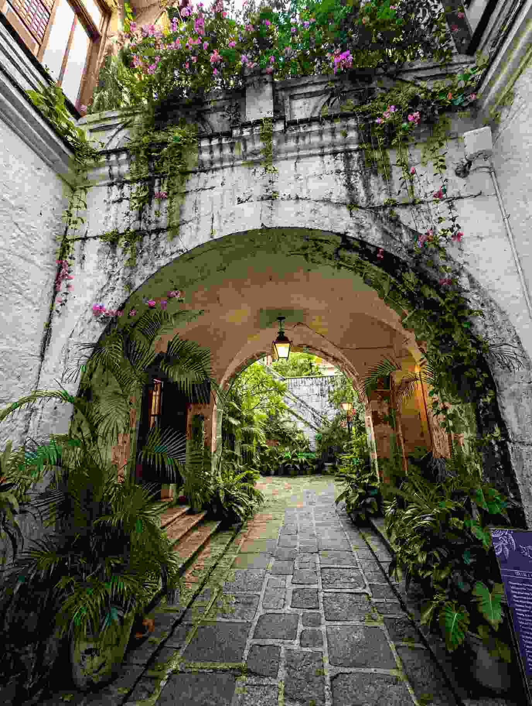

A day in Manila goes better with a small plan. The capital is huge and the traffic is unpredictable, so a stopover that tries to cross the whole metro for a list of famous sights usually ends up mostly in a car. A better approach is to pick one district and give it your daylight hours. For a layover, that district is Intramuros.
Intramuros is Manila's historic walled city, and it works for a short stay because its churches, plazas, museums and Fort Santiago sit close enough to walk between. You can see a good slice of the old city on foot, stop for a Filipino lunch, and still keep time to rest before your next flight.
This guide assumes you have roughly one day between flights and are able to leave the airport. If your connection is international, check entry requirements and baggage arrangements before you plan to go landside.

Is 24 Hours Enough for Intramuros?
Yes, as long as your flights leave you a real block of free time. The catch is that a 24-hour gap between flights is not 24 hours of sightseeing. You still need time for immigration where it applies, for bags, for the trip to your hotel, for sleep, and for the trip back and check-in. For an international departure, follow your airline's recommended airport arrival time and add a generous cushion for traffic.
If your layover is shorter than planned or your flight lands late, keep Intramuros as the only goal and drop anything else.
The Day, Hour by Hour
Hours 1 to 3: Land, settle in and head over
After landing, clear the airport formalities and get to your hotel or a luggage-storage spot. If you are sleeping over, choose a hotel with your departure in mind as well as your sightseeing. A place near Intramuros or on a well-connected route can make things easier, but compare the way back to your departure terminal before you book.
Travel time between the airport and Intramuros swings with traffic, weather and the hour. A short distance on a map can take far longer in a busy period, so check a live navigation app before leaving. Do not schedule a timed museum visit right after you land.
Hours 3 to 6: Walk the walled city
Start with the streets and plazas. Intramuros grew during the Spanish colonial period, and its walls and surviving buildings show only part of the story. War, rebuilding, religious life and schooling have all left marks on the district. Walk slowly and look at the architecture rather than jumping between photo spots.
The midday streets can be hot. Carry water, wear comfortable shoes and use indoor stops as breaks.
Fort Santiago
Fort Santiago is the district's best-known landmark. The fortress has served several military and political purposes over the centuries, and it is closely linked to national hero José Rizal, who was imprisoned there before his execution in 1896. Give yourself time for the grounds and exhibits instead of treating it as a gate photo. Check the Intramuros Administration website for current hours, last-entry times, ticket prices and any closures, since cutoffs matter if you arrive late.
Manila Cathedral and Plaza Roma
From the fort, continue toward Plaza Roma and Manila Cathedral, an important Catholic landmark within Intramuros's long religious history. If it is open to visitors, be respectful of services and of people who came to worship, as some areas may be restricted during religious activities. Plaza Roma makes a useful pause to decide whether you have time for another museum or would rather slow down for lunch.
San Agustin Church and Museum
San Agustin Church is one of the major heritage sites in the district and part of the UNESCO-listed Baroque Churches of the Philippines. Its architecture and museum look at religious art, church history and the role of Catholic institutions in colonial Manila. Church and museum schedules can differ, so check visiting hours and any service-related limits. If you only have time for one paid site, choose by interest: Fort Santiago for the fortress and the Rizal story, or San Agustin for church architecture and religious history.
Casa Manila or Museo de Intramuros
If you still have time, add one more museum rather than rushing through two. Casa Manila recreates the interior of an affluent home from the Spanish colonial period, while Museo de Intramuros holds religious and historical collections tied to the district. Both are indoors, which helps in the hottest part of the day. Confirm opening days first, since some Intramuros museums close on Mondays and last entry can be earlier than closing time.
Hours 6 to 8: A Filipino lunch
Make lunch part of the visit. Look for Filipino classics such as adobo, sinigang, kare-kare, pancit or grilled dishes. For a quick meal, stay close to your walking route, and for a longer sit-down, leave enough time to get back to the next site. Intramuros and the nearby streets have cafés, casual eateries and restaurants, but menus, prices and hours change, so check recent listings. On a short stopover, a dependable meal nearby beats crossing the city for a place you saw online.
Hours 8 to 10: Wrap up or rest
Use the late afternoon for a plaza or street you missed, a small souvenir or a coffee. If you started early and still have energy, Baluarte de San Diego is an option, but check its last-entry time and skip it if it means rushing. Leave some time unplanned, because part of the appeal is how the walls, lanes, churches and plazas fit together.
Hours 10 to 16: Dinner and sleep
Eat close to your hotel or along an easy route back to it. Traffic can turn a short distance into a long trip, so avoid a late cross-city food crawl if your flight is early. Sleep matters more than one extra attraction.
Hours 16 to 24: Breakfast and the airport
Have breakfast near your hotel and, if the schedule allows, take a short morning walk. Do not start anything distant on departure day. Check traffic and your terminal's requirements, and leave with a buffer. If your flight is early, go straight to the airport, because a missed connection costs more than a final stop is worth.
Getting Around
Pick transport that fits your schedule and luggage. Ride-hailing and taxis are convenient for airport transfers, but fares and journey times depend on demand and traffic. Public transport can work on some routes, though changing lines or using stations with bags often takes longer than expected.
A few habits help. Check your exact arrival and departure terminals, since Manila's airport terminals are not all in one building. Decide how you will get back before you leave the airport. Use live traffic estimates, not a fixed guess. Keep your passport, phone, payment method and flight details within reach, and avoid booking a non-refundable attraction too close to your estimated arrival. If you have bulky luggage, arrange secure storage through your hotel or a reputable provider, and never leave bags unattended.
What to Budget
The total depends on whether you need a hotel, how you travel, which museums you enter and where you eat. Set aside separate amounts for airport transfers both ways, one night of accommodation if needed, meals, coffee and water, entry fees for Fort Santiago and any museums, and a small cushion for traffic or schedule changes. The Intramuros Administration site lists current hours and fees for the sites it manages, so check it shortly before your visit, and ask whether a multi-site pass exists and suits your plan.
What to Pack
Keep your day bag light: a refillable water bottle, sun protection, comfortable walking shoes, a compact umbrella or rain jacket in wet weather, a power bank, and a little cash alongside your usual payment method. Carry any identification needed for discounted tickets. Dress respectfully for churches, follow site rules on photography, food and bags, and check the forecast, since sudden rain can change a walking plan.
When to Go
An early start is usually more comfortable in hot or humid weather. Weekends and holidays can be crowded, and weekdays may be quieter at some sites, but each museum keeps its own schedule and closure days, so confirm the hours for your exact date. If your stopover falls on a major holiday or city event, expect changes in traffic and crowds and keep your route flexible.
When Intramuros Is the Wrong Choice
Intramuros suits people who like history, architecture, museums and walking through an older part of a city. It is a poor fit if you have only a few hours between flights, must stay airside, or cannot risk traffic delays on the way back. For a very short connection, stay at the airport or do something near your hotel instead of rushing into central Manila.
If you are thinking about where to go after Manila, our guide to choosing between Dumaguete and Cebu and our first-timer's food trip in Dumaguete are good next reads, and the Davao guide covers a Mindanao option.
Make the Stopover Count
Give Intramuros the bulk of your day, see Fort Santiago and one or two other heritage sites, eat a Filipino meal, and leave room to rest and get back to the airport safely. The best plan is the one that fits your real flight times, so check museum hours, watch traffic, and be ready to skip a stop if the day runs late.